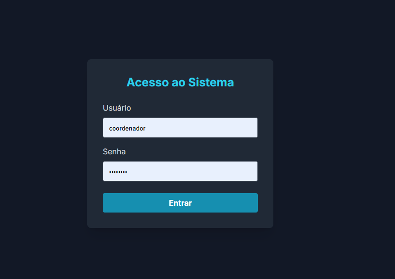

1. Introdução
Este manual descreve todas as funcionalidades do Sistema de Gerenciamento de Ambientes, projetado para otimizar a reserva e organização das salas de aula, laboratórios e equipamentos da escola. O sistema possui dois níveis de acesso: Professor e Coordenador, cada um com permissões específicas.
2. Acesso ao Sistema
Ao abrir a aplicação, você verá a tela de login.
Utilize as seguintes credenciais para acessar:
- Perfil Professor:
- Usuário: `professor`
- Senha: `professor`
- Perfil Coordenador:
- Usuário: `coordenador`
- Senha: `senai123`
Após o login, você será direcionado para a tela principal.
3. Tela Principal (Dashboard)
A tela principal exibe todos os ambientes disponíveis para agendamento.
- Título e Perfil: No canto superior esquerdo, o título do sistema é exibido junto com uma etiqueta (flag) que identifica seu nível de acesso (Professor ou Coordenador).
- Ícones dos Ambientes: Cada ambiente é representado por um cartão com um ícone específico:
- `📚` para Salas de Aula
- `🖥️` para Laboratórios
- `💻` para Notebooks
- Sair: No canto superior direito, o botão "Sair" permite que você encerre sua sessão e retorne à tela de login.
Para ver a agenda de um ambiente, basta clicar sobre o cartão desejado.
4. Visualizando Agendamentos
Ao clicar em um ambiente, uma janela (modal) se abrirá com o calendário de ocupação.
Navegação
- Botões "Anterior" e "Próximo": Permitem navegar entre dias, semanas ou meses, dependendo da visualização ativa.
- Visualização Diária, Semanal e Mensal: Você pode alternar entre três modos de visualização para melhor planejamento.
Tipos de Visualização
a) Diária
Mostra os três períodos (Manhã, Tarde e Noite) para a data selecionada, detalhando quem está usando o ambiente ou se ele está livre.
b) Semanal
Exibe uma grade com todos os dias da semana e os três períodos, ideal para uma visão geral da ocupação semanal.
c) Mensal
Apresenta o calendário do mês inteiro. Cada dia exibe as letras M, T e N (Manhã, Tarde e Noite) com cores que indicam o status:
- Verde: Disponível
- Amarelo: Solicitação pendente
- Vermelho: Reservado
- Cinza: Bloqueado
Dica: Na visualização mensal, você pode clicar em qualquer dia para ser levado diretamente para a visualização diária daquela data.
5. Funcionalidades para Professores
O perfil de professor permite visualizar todos os agendamentos e solicitar horários vagos.
Como Solicitar um Agendamento
- Navegue até o ambiente e data desejados na visualização diária.
- Em um período que esteja "Disponível", clique no botão "Solicitar".
- Preencha seu nome e sua turma no formulário que aparecerá.
- Clique em "Enviar Solicitação".
Sua solicitação ficará com o status "Pendente" (amarelo) e aguardará a aprovação da coordenação.
6. Funcionalidades para Coordenadores
O perfil de coordenador possui acesso total ao sistema, incluindo todas as funções de gerenciamento.
6.1. Gerenciamento de Solicitações
- Notificações: Um ícone de sino (🔔) no canto superior direito da tela principal exibirá um indicador vermelho quando houver novas solicitações.
- Aprovar/Negar: Ao clicar no sino, uma lista com todas as solicitações pendentes será exibida. Você pode "Aprovar" ou "Negar" cada pedido individualmente. Ao aprovar, o agendamento é confirmado e o horário fica reservado.
6.2. Agendamento Direto e Bloqueio
Na visualização diária, o coordenador pode gerenciar os horários diretamente:
- Agendar: Preencha os campos "Professor" e "Turma" e clique em "Salvar". Para liberar um horário, apague os campos e salve novamente.
- Bloquear: Clique no botão "Bloquear". O sistema pedirá um motivo (ex: "Manutenção", "Feriado"). O horário ficará indisponível para solicitações. Para desbloquear, basta apagar os campos e salvar.
6.3. Agendamento Recorrente (Avançado)
Para agendamentos que se repetem, marque a caixa "Agendamento Recorrente". Uma nova seção de opções aparecerá:
a) Tipo "Semanal"
Ideal para aulas fixas.
- Selecione os dias da semana em que a reserva deve se repetir (ex: todas as terças e quintas).
- Defina uma data final no campo "Repetir até:".
- Clique em "Salvar".
b) Tipo "Intervalo de Dias"
Perfeito para eventos, semanas de prova ou projetos.
- Mude o tipo para "Intervalo de Dias". A data de início será a data que você está visualizando.
- Defina a data final no campo "Repetir até:".
- Marque a opção "Apenas dias úteis" se desejar que a reserva ignore sábados e domingos.
- Clique em "Salvar".
Para cancelar uma recorrência, basta desmarcar a caixa "Agendamento Recorrente" e salvar, ou clicar no link "Remover toda a recorrência".